<!DOCTYPE html>
<html lang="en">
<head>
    <meta charset="UTF-8">
    <title>Work Sample</title>
    <meta name="viewport" content="width=device-width, initial-scale=1">
    <meta name="description" content="Work Sample  AI Firewall : An open-source safety layer for AI coding tools like Cursor, Blackbox, and Replit. https://github.com/ersurajsingh/AIFirewall    AI Firewall is a comprehensive security system that analyzes AI-generated code suggestions for potential security vulnerabilities, policy violations, and dangerous patterns. It provides real-time safety scoring, detailed explanations, and interactive review interfaces to ensure AI-generated code meets ">
    <link rel="stylesheet" href="theme.css">
    <style>
    
.normal_text {
font-family: Arial;
font-size: 11.0PT;
color: #000000;
line-height: 1.15;
direction: ltr;
}
h1 {
font-size: 20.0PT;
padding-top: 20.0PT;
padding-bottom: 6.0PT;
direction: ltr;
}
h2 {
font-size: 16.0PT;
padding-top: 18.0PT;
padding-bottom: 6.0PT;
direction: ltr;
}
h3 {
font-size: 14.0PT;
color: #434343;
padding-top: 16.0PT;
padding-bottom: 4.0PT;
direction: ltr;
}
h4 {
font-size: 12.0PT;
color: #666666;
padding-top: 14.0PT;
padding-bottom: 4.0PT;
direction: ltr;
}
h5 {
font-size: 11.0PT;
color: #666666;
padding-top: 12.0PT;
padding-bottom: 4.0PT;
direction: ltr;
}
h6 {
font-size: 11.0PT;
color: #666666;
font-style: italic;
padding-top: 12.0PT;
padding-bottom: 4.0PT;
direction: ltr;
}
.title {
font-size: 26.0PT;
padding-bottom: 3.0PT;
direction: ltr;
}
.subtitle {
font-family: Arial;
font-size: 15.0PT;
color: #666666;
padding-bottom: 16.0PT;
direction: ltr;
}


    </style>
</head>
<body>
<header>
    <div class="hamburger-menu" onclick="toggleMenu()">
        <span></span>
        <span></span>
        <span></span>
    </div>
    <nav>
    <ul>
        <li><a href="index.html">Work Sample</a></li>
    </ul>
    </nav>
</header>
<div class="content"clear: both; overflow: auto; ">
<div style="clear: both;">&nbsp;</div><br><p class="normal_text" style='direction: ltr; text-align: center; '><span style='font-size: 22.0PT; '><u><strong>Work Sample
</strong></u></span></p><p class="normal_text" style='direction: ltr; text-align: center; '><span style='font-size: 22.0PT; '><u><strong>
</strong></u></span></p><ol style="padding-left: 20.0px;"><li><span style='font-size: 14.0PT; '><strong>AI Firewall : An open-source safety layer for AI coding tools like Cursor, Blackbox, and Replit.</strong></span><span style='font-size: 14.0PT; color: #1155cc; '><a href="https://github.com/ersurajsingh/AIFirewall" style="font-size: 14.0PT; color: #1155cc; ">https://github.com/ersurajsingh/AIFirewall</a></span><br>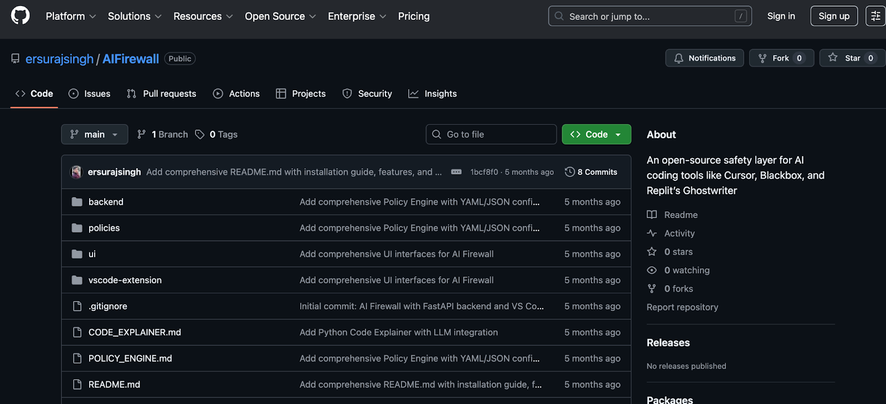<span style='font-size: 14.0PT; '><strong>
</strong></span></li></ol><p class="normal_text" style='direction: ltr; '><span style='font-size: 14.0PT; '><strong>
</strong></span></p><p class="normal_text" style='direction: ltr; '><span style='font-size: 14.0PT; '><strong>AI Firewall is a comprehensive security system that analyzes AI-generated code suggestions for potential security vulnerabilities, policy violations, and dangerous patterns. It provides real-time safety scoring, detailed explanations, and interactive review interfaces to ensure AI-generated code meets your security standards.
</strong></span></p><p class="normal_text" style='direction: ltr; '><span style='font-size: 14.0PT; '><strong>
</strong></span></p><p class="normal_text" style='direction: ltr; '><span style='font-size: 14.0PT; '><strong>2.
</strong></span></p><p class="normal_text" style='direction: ltr; '>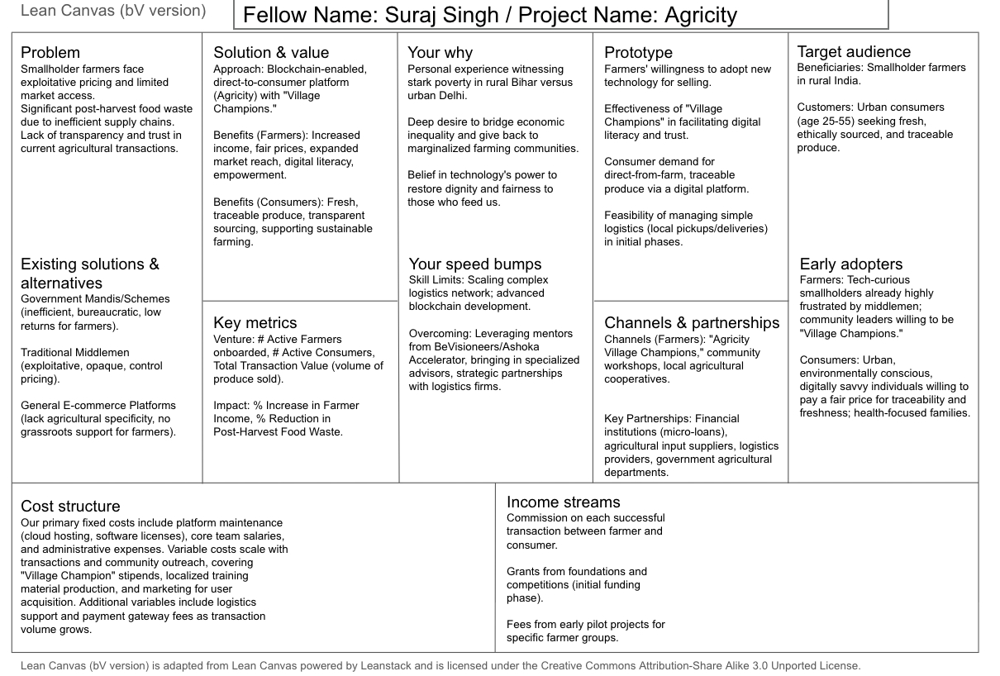<span style='font-size: 14.0PT; '><strong>
</strong></span></p><p class="normal_text" style='direction: ltr; '>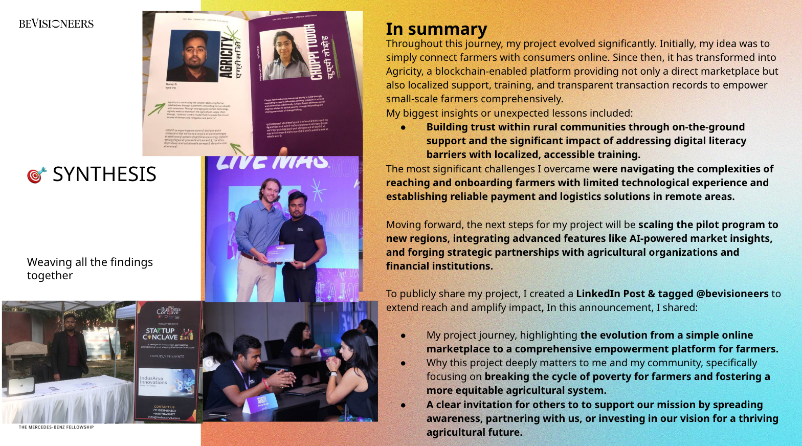<span style='font-size: 14.0PT; '><strong>
</strong></span></p><p class="normal_text" style='direction: ltr; '><span style='font-size: 14.0PT; '><strong>
</strong></span></p><p class="normal_text" style='direction: ltr; '><span style='font-size: 14.0PT; '><strong>
</strong></span></p><p class="normal_text" style='direction: ltr; '><span style='font-size: 14.0PT; '><strong>
</strong></span></p><p class="normal_text" style='direction: ltr; '><span style='font-size: 14.0PT; '><strong>
</strong></span></p><p class="normal_text" style='direction: ltr; '><span style='font-size: 14.0PT; '><strong>
</strong></span></p><p class="normal_text" style='direction: ltr; '><span style='font-size: 14.0PT; '><strong>
</strong></span></p><p class="normal_text" style='direction: ltr; '><span style='font-size: 14.0PT; '><strong>
</strong></span></p><p class="normal_text" style='direction: ltr; '><span style='font-size: 14.0PT; '><strong>
</strong></span></p><p class="normal_text" style='direction: ltr; '><span style='font-size: 14.0PT; '><strong>
</strong></span></p><p class="normal_text" style='direction: ltr; '><span style='font-size: 14.0PT; '><strong>
</strong></span></p><p class="normal_text" style='direction: ltr; '><span style='font-size: 14.0PT; '><strong>2.Water Impact Tracker for AI Workloads
</strong></span></p><p class="normal_text" style='direction: ltr; '>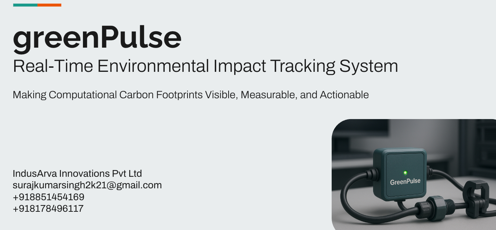<span style='font-size: 14.0PT; '><strong>
</strong></span></p><h1 style='padding-top: 24.0PT; direction: ltr; '><span style='font-size: 23.0PT; '><strong>GreenPulse: Real-Time Carbon & Water Impact Tracker for AI Workloads</strong></span><span style=''><strong>
</strong></span></h1><p class="normal_text" style='direction: ltr; '><span style=''>
</span></p><h2 style='padding-bottom: 4.0PT; direction: ltr; '><span style='font-size: 17.0PT; '><strong>Overview
</strong></span></h2><p class="normal_text" style='padding-top: 12.0PT; padding-bottom: 12.0PT; direction: ltr; '><span style=''>GreenPulse is a lightweight, low-cost IoT + AI solution designed to </span><span style=''><strong>measure and report the environmental footprint of AI workloads</strong></span><span style=''> in real time. It tracks </span><span style=''><strong>energy consumption</strong></span><span style=''>, converts it into </span><span style=''><strong>CO₂ emissions</strong></span><span style=''>, and monitors </span><span style=''><strong>water usage</strong></span><span style=''> in cooling systems, providing actionable insights for optimization. The system works on </span><span style=''><strong>small AI clusters, research labs, and edge setups</strong></span><span style=''>, making it accessible for </span><span style=''><strong>resource-constrained regions</strong></span><span style=''> and scalable for larger infrastructures.
</span></p><p class="normal_text" style='direction: ltr; '><span style=''>
</span></p><h2 style='padding-bottom: 4.0PT; line-height: 1.0; direction: ltr; '><span style='font-size: 17.0PT; '><strong>Objectives
</strong></span></h2><ul style="padding-left: 20.0px;"><li><span style=''>Provide </span><span style=''><strong>real-time tracking</strong></span><span style=''> of carbon and water impact per AI job.
</span></li><li><span style=''>Enable </span><span style=''><strong>cost-friendly, modular, and offline-capable</strong></span><span style=''> deployment.
</span></li><li><span style=''>Offer </span><span style=''><strong>data transparency</strong></span><span style=''> for sustainable AI reporting.
</span></li><li><span style=''>Deliver </span><span style=''><strong>actionable recommendations</strong></span><span style=''> to reduce resource use.
</span></li></ul><p class="normal_text" style='line-height: 1.0; direction: ltr; '><span style=''>
</span></p><h2 style='padding-bottom: 4.0PT; line-height: 1.0; direction: ltr; '><span style='font-size: 17.0PT; '><strong>Key Features
</strong></span></h2><ul style="padding-left: 20.0px;"><li><span style=''><strong>Dual Monitoring
</strong></span></li><li><span style=''><strong>Energy → CO₂</strong></span><span style=''>: Measure power usage during AI jobs and compute CO₂ equivalent using regional grid factors.
</span></li><li><span style=''><strong>Water Tracking</strong></span><span style=''>: Measure flow rate and temperature in cooling loops to estimate water footprint.
</span></li><li><span style=''><strong>Real-Time Dashboard
</strong></span></li><li><span style=''>Displays </span><span style=''><strong>kWh, CO₂e, liters of water</strong></span><span style=''>, and efficiency ratios.
</span></li><li><span style=''>Job-based tagging for </span><span style=''><strong>training/inference runs</strong></span><span style=''>.
</span></li><li><span style=''><strong>Actionable Insights
</strong></span></li><li><span style=''>Alerts for anomalies (e.g., high water flow, overheating).
</span></li><li><span style=''>Suggestions for greener time slots (based on grid carbon intensity schedules).
</span></li></ul><p class="normal_text" style='line-height: 1.0; direction: ltr; '><span style=''>
</span></p><h2 style='padding-bottom: 4.0PT; line-height: 1.0; direction: ltr; '><span style='font-size: 17.0PT; '><strong>Architecture
</strong></span></h2><p class="normal_text" style='padding-top: 12.0PT; padding-bottom: 12.0PT; line-height: 1.0; direction: ltr; '><span style=''><strong>Data Flow
</strong></span></p><ul style="padding-left: 20.0px;"><li><span style=''><strong>Sensors (Flow + Temp)</strong></span><span style=''> → ESP32 → MQTT → InfluxDB → Grafana Dashboard
</span></li><li><span style=''><strong>Power Data</strong></span><span style=''> → Smart Plug or PZEM sensor → Host Agent → MQTT → InfluxDB
</span></li><li><span style=''><strong>Job Metadata</strong></span><span style=''> → Python wrapper → Tags metrics with job ID
</span></li></ul><h2 style='padding-bottom: 4.0PT; line-height: 1.0; direction: ltr; '><span style='font-size: 17.0PT; '><strong>Measurement Methodology
</strong></span></h2><ul style="padding-left: 20.0px;"><li><span style=''><strong>Energy (kWh)</strong></span><span style=''> = Integrated power readings from smart plug or PZEM module.
</span></li><li><span style=''><strong>CO₂e (kg)</strong></span><span style=''> = Energy (kWh) × Regional grid factor (configurable).
</span></li><li><span style=''><strong>Water (liters)</strong></span><span style=''> = Flow rate × Time (YF-S201 calibrated pulses).
</span></li><li><span style=''><strong>Efficiency Metrics</strong></span><span style=''> = Liters per kWh and anomaly detection (e.g., high flow without heat rise).
</span></li></ul><p class="normal_text" style='line-height: 1.0; direction: ltr; '><span style=''>
</span></p><h2 style='padding-bottom: 4.0PT; line-height: 1.0; direction: ltr; '><span style='font-size: 17.0PT; '><strong>Dashboard Metrics
</strong></span></h2><ul style="padding-left: 20.0px;"><li><span style=''>Total and per-job:
</span></li><li><span style=''><strong>Energy (kWh)
</strong></span></li><li><span style=''><strong>CO₂e (kg)
</strong></span></li><li><span style=''><strong>Water (L)
</strong></span></li><li><span style=''>Alerts for:
</span></li><li><span style=''>High cooling water flow
</span></li><li><span style=''>Overheating risks
</span></li><li><span style=''>Inefficient cooling (low ΔT but high flow)
</span></li></ul><p class="normal_text" style='line-height: 1.0; direction: ltr; '><span style=''>
</span></p><h2 style='padding-bottom: 4.0PT; line-height: 1.0; direction: ltr; '><span style='font-size: 17.0PT; '><strong>Why GreenPulse?
</strong></span></h2><ul style="padding-left: 20.0px;"><li><span style=''><strong>Affordable & Accessible</strong></span><span style=''>: Cost under ₹3,500 (~$42) for full PoC setup.
</span></li><li><span style=''><strong>Scalable</strong></span><span style=''>: Works from single-node rigs to small data centers.
</span></li><li><span style=''><strong>Transparency First</strong></span><span style=''>: Creates a replicable model for sustainable AI.
</span></li><li><span style=''><strong>Impact</strong></span><span style=''>: Empowers AI developers, universities, and small labs to make informed environmental decisions.
</span></li></ul><p class="normal_text" style='direction: ltr; '><span style=''>
</span></p><p class="normal_text" style='padding-top: 12.0PT; padding-bottom: 12.0PT; direction: ltr; '><span style=''>
</span></p><p class="normal_text" style='direction: ltr; '><span style=''>
</span></p><p class="normal_text" style='direction: ltr; '><span style=''>
</span></p><p class="normal_text" style='direction: ltr; '><span style=''>
</span></p><p class="normal_text" style='direction: ltr; '><span style=''>
</span></p><p class="normal_text" style='direction: ltr; '><span style=''>
</span></p><p class="normal_text" style='direction: ltr; '><span style=''>
</span></p><p class="normal_text" style='direction: ltr; '><span style=''>4.AI-Powered Psychometric & Gamified Credit Scoring for UAE SMEs
</span></p><p class="normal_text" style='direction: ltr; '>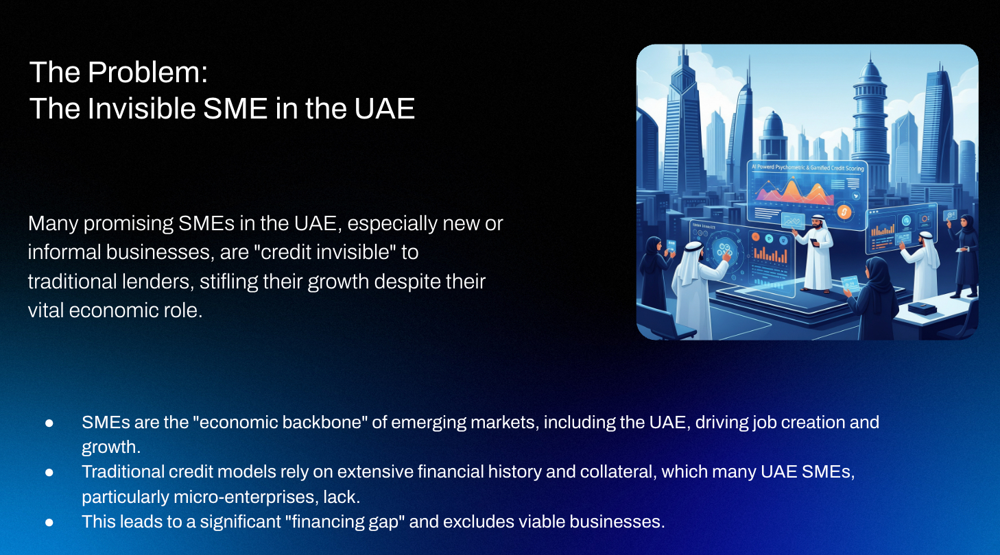<span style=''>
</span></p><p class="normal_text" style='direction: ltr; '>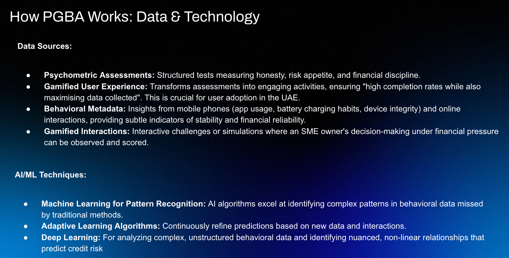<span style=''>
</span></p><p class="normal_text" style='direction: ltr; '><span style=''>
</span></p><p class="normal_text" style='direction: ltr; '><span style=''>
</span></p><p class="normal_text" style='direction: ltr; '><span style='font-size: 14.0PT; '><strong>
</strong></span></p><p class="normal_text" style='direction: ltr; '><span style='font-size: 14.0PT; '><strong>3.
</strong></span></p><p class="normal_text" style='padding-bottom: 10.0PT; line-height: 1.0; direction: ltr; text-align: center; '><span style='font-family: Times New Roman; font-size: 15.0PT; '><strong>OXYGEN LEAK DETECTOR</strong></span><span style='font-family: Calibri; '>
</span></p><p class="normal_text" style='line-height: 1.0; direction: ltr; text-align: center; '><span style='font-family: Times New Roman; '>Suraj Kumar Singh
</span></p><p class="normal_text" style='line-height: 1.0; direction: ltr; text-align: center; '><span style='font-family: Times New Roman; '>University of Petroleum & Energy Studies,
</span></p><p class="normal_text" style='line-height: 1.0; direction: ltr; text-align: center; '><span style='font-family: Calibri; '> </span><span style='font-family: Times New Roman; '>Energy Acres, Upes, Bidholi, via, Prem Nagar, Uttarakhand 248007&nbsp;&nbsp;
</span></p><p class="normal_text" style='line-height: 1.0; direction: ltr; text-align: center; '><span style='font-family: Times New Roman; font-size: 10.0PT; '><em>rishi@ddn.upes.ac.in
</em></span></p><p class="normal_text" style='padding-bottom: 10.0PT; line-height: 1.15; direction: ltr; '><span style='font-family: Times New Roman; font-size: 10.0PT; '><strong>
</strong></span></p><p class="normal_text" style='padding-bottom: 10.0PT; line-height: 1.15; direction: ltr; '><span style='font-family: Times New Roman; font-size: 10.0PT; '><strong>Abstract: </strong></span><span style='font-family: Times New Roman; font-size: 10.0PT; '>During transfer of liquid medical oxygen(LMO)to many tanks installed in hospital, the hose pipe (connecting hose) is connected to input of tanks and transfer of LMO is done. During the engagement-disengagement of connection pipe every time, the leakage happens.The mechanism has been designed to avoid the loss of oxygen during transfer of LMO to tanks.Proposed is the design of a Low Cost - High Sensitivity Acoustic Camera. This setup will be able to detect Oxygen Leakage Hotspot while the patient is sleeping with the oxygen mask on as improper fixing of oxygen mask on face is a reason for oxygen wastage as well as during the supply chain of liquid oxygen to assist the logistics .</span><span style='font-family: Times New Roman; font-size: 10.0PT; '><strong>
</strong></span></p><div style="clear: both;">&nbsp;</div><br><p class="normal_text" style='padding-bottom: 10.0PT; line-height: 1.15; direction: ltr; '><span style='font-family: Times New Roman; font-size: 12.0PT; '><strong>Introduction 
</strong></span></p><p class="normal_text" style='line-height: 1.0; direction: ltr; '><span style='font-family: Times New Roman; '>During transfer of LMO to many tanks installed in hospital, the hose pipe (connecting hose) is connected to input of tanks and transfer of LMO is done. Thereafter, the connection is removed and connected to another tank, then one after another. During the engagement and disengagement of connection pipe every time, the leakage is happened. The mechanism has been designed to avoid the loss of oxygen during transfer of LMO to tanks.
</span></p><p class="normal_text" style='line-height: 1.0; direction: ltr; '><span style='font-family: Times New Roman; '>Proposed is the design of a Low Cost - High Sensitivity Acoustic Camera. This setup will be able to detect Oxygen Leakage Hotspot while the patient is sleeping with the oxygen mask on as improper fixing of oxygen mask on face is a reason for oxygen wastage. 
</span></p><p class="normal_text" style='line-height: 1.15; direction: ltr; '><span style='font-family: Times New Roman; '>Besides, it can also be used while we are transferring liquid medical oxygen (LMO) from a capsule (Mobile tank) to tanks installed in hospitals.
</span></p><p class="normal_text" style='line-height: 1.15; direction: ltr; '><span style='font-family: Times New Roman; '>
</span></p><p class="normal_text" style='line-height: 1.5; direction: ltr; '><span style='font-family: Times New Roman; '><strong>Project description 
</strong></span></p><p class="normal_text" style='line-height: 1.0; direction: ltr; '><span style='font-family: Times New Roman; '>Proposed is the design of a Low Cost - High Sensitivity Acoustic Camera. This setup will be able to detect Oxygen Leakage Hotspot while the patients are sleeping with the oxygen mask on as improper fixing of oxygen mask on face is a reason for oxygen wastage. It can be used while we are transferring liquid medical oxygen (LMO) from a capsule (Mobile tank) to tanks installed in hospitals. The setup here consists of a camera, for capturing an image, an array of digital microphones, and a Raspberry Pi Model 3 to read data from the digital microphones simultaneously and then transfer the data to a PC for post processing.
</span></p><p class="normal_text" style='line-height: 1.0; direction: ltr; '><span style='font-family: Times New Roman; '>Delay and sum beam forming is implemented in this design. To facilitate the model prepared, a low cost framework for such a model using a Camera stand and Dish Antenna which can act as a structure to be kept inside the hospital’s ward where the patients are sleeping with their masks on so that any leakage can be detected. 
</span></p><p class="normal_text" style='line-height: 1.0; direction: ltr; '><span style='font-family: Times New Roman; '>At the smaller scale sometimes due to improper fixing of the oxygen mask on the face, the oxygen is not properly utilized to support the patient's needs. If the mask is not properly fixed on the face, some amount of oxygen is not inhaled by the patient and it is gone as waste. To compensate for the need of the patient, the flow rate of oxygen is increased which further increases the wastage of oxygen. This solution, I believe, can solve for all levels in the current supply chain system of oxygen being transferred. The frame can be made to continuously rotate and scan the patient’s masks or the node where Liquid Oxygen is being transferred from Tanks to Hospitals.
</span></p><p class="normal_text" style='line-height: 1.0; direction: ltr; '><span style='font-family: Times New Roman; '>
</span></p><p class="normal_text" style='line-height: 1.0; direction: ltr; '><span style='font-family: Times New Roman; '>When there is a leakage from any source, a very mild "Hissing "sound can be heard if we observe quietly.
</span></p><p class="normal_text" style='line-height: 1.15; direction: ltr; '><span style='font-family: Times New Roman; '>This observation which is even audible to normal human's ear can be amplified through a device if we add lots of microphones in the device to make it more prone to that sound. Over this we add a Camera so as to convert it into an Acoustic Camera By measuring the timing and phase differences of signals appearing at each microphone, it’s possible to determine the location of sound sources in front of the the lineup of the microphones. There have been cases where oxygen leakage has costed the lives of many patients. The greatest risk of large leakage can be when the oxygen from the Mobile tank is being transferred. This leakage needs to be stopped since it is the first checkpoint and a crucial one. The frame structure was to be made rigid so as to keep an eye continuously working of the project 
</span></p><p class="normal_text" style='line-height: 1.15; direction: ltr; '><span style='font-family: Times New Roman; '>
</span></p><p class="normal_text" style='line-height: 1.15; direction: ltr; '><span style='font-family: Times New Roman; '>
</span></p><p class="normal_text" style='line-height: 1.15; direction: ltr; '><span style='font-family: Times New Roman; '>
</span></p><p class="normal_text" style='line-height: 1.15; direction: ltr; '><span style='font-family: Times New Roman; '>
</span></p><p class="normal_text" style='line-height: 1.15; direction: ltr; '><span style='font-family: Times New Roman; '>
</span></p><p class="normal_text" style='line-height: 1.15; direction: ltr; '><span style='font-family: Times New Roman; '>
</span></p><p class="normal_text" style='line-height: 1.15; direction: ltr; '><span style='font-family: Times New Roman; '>
</span></p><p class="normal_text" style='line-height: 1.15; direction: ltr; '><span style='font-family: Times New Roman; '>
</span></p><p class="normal_text" style='line-height: 1.15; direction: ltr; '><span style='font-family: Times New Roman; '>
</span></p><p class="normal_text" style='line-height: 1.15; direction: ltr; '>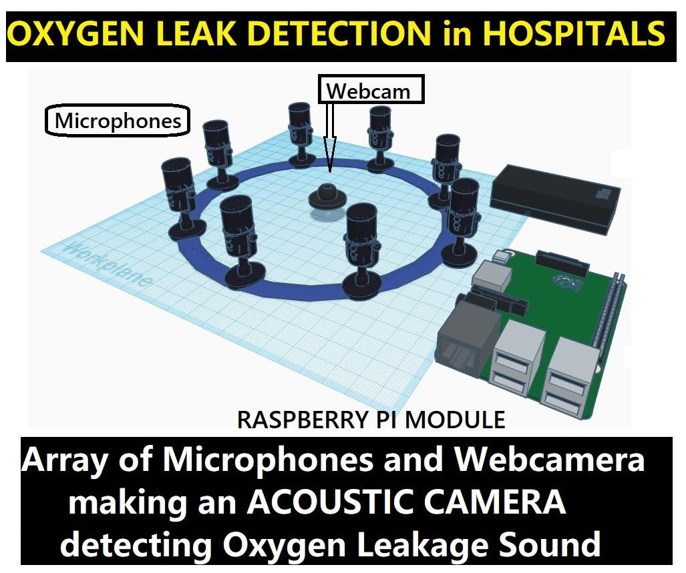<span style='font-family: Times New Roman; '>
</span></p><p class="normal_text" style='line-height: 1.15; direction: ltr; '>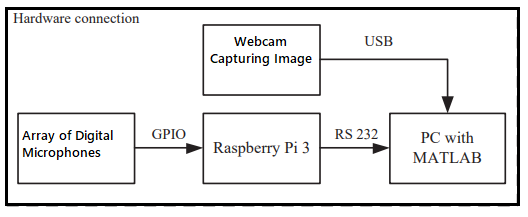<span style='font-family: Times New Roman; '>
</span></p><p class="normal_text" style='line-height: 1.15; direction: ltr; text-align: center; '><span style='font-family: Times New Roman; font-size: 12.0PT; '><strong>Schematic Architecture
</strong></span></p><p class="normal_text" style='line-height: 1.15; direction: ltr; '><span style='font-family: Times New Roman; '>
</span></p><p class="normal_text" style='line-height: 1.15; direction: ltr; '><span style='font-family: Times New Roman; '>
</span></p><div style="clear: both;">&nbsp;</div><br><p class="normal_text" style='line-height: 1.5; direction: ltr; '><span style='font-family: Times New Roman; font-size: 12.0PT; '><strong>Importance of the Project
</strong></span></p><p class="normal_text" style='padding-bottom: 10.0PT; line-height: 1.15; direction: ltr; '><span style='font-family: Times New Roman; '>In the current pandemic, innovation is what is required to tackle the different challenges in front of the nation and the biggest of them till today is the oxygen crisis. In such situations, minimizing the wastage is equally important and that can be implemented only by early detection of leakage .The project can detect this with its highly increased sensitivity due to the array of microphones and camera attached making the leakage of gas, visible to us. Immediate usage of the device in hospital can be done for the time being.
</span></p><p class="normal_text" style='padding-bottom: 10.0PT; line-height: 1.15; direction: ltr; '><span style='font-family: Times New Roman; font-size: 12.0PT; '><strong>Conclusion
</strong></span></p><div style="clear: both;">&nbsp;</div><br><p class="normal_text" style='padding-bottom: 10.0PT; line-height: 1.15; direction: ltr; '><span style='font-family: Times New Roman; '>In India and across the globe, Accessibility to Healthcare is one big problem due to widespread population and large gaps between the hospitals and the villages/remote areas. The doctor-to-population ratio in India is 1:2148 and under this gap between hospitals and villages this problem alone takes a lot of lives each year. This model can help us in doing surveillance of a larger group of patients on their oxygen level and leakage sources. My aim to convert the project into a low cost working model for developing countries to save oxygen and do surveillance in hospitals and during transfers of oxygen. Cost of one such device would come around 100 Dollars which can be reduced in case of mass production. Also for patients on oxygen support at remote locations this device can serve for surveillance at night.
</span></p><p class="normal_text" style='padding-bottom: 10.0PT; line-height: 1.15; direction: ltr; '><span style='font-family: Times New Roman; font-size: 12.0PT; '><strong>Acknowledgement 
</strong></span></p><p class="normal_text" style='padding-bottom: 10.0PT; line-height: 1.15; direction: ltr; '><span style='font-family: Times New Roman; '>I would like to express my special thanks of gratitude to my professor Dr. Rishi Diwaan who gave me the guidance and feedback to do this project on the topic which also helped me in doing a lot of Research and Development.
</span></p><p class="normal_text" style='direction: ltr; '><span style='font-size: 14.0PT; '><strong>
</strong></span></p><div style="clear: both;">&nbsp;</div><br><p class="normal_text" style='direction: ltr; '><span style='font-size: 14.0PT; '><strong>
</strong></span></p><p class="normal_text" style='direction: ltr; '><span style='font-size: 14.0PT; '><strong>
</strong></span></p><p class="normal_text" style='direction: ltr; '><span style='font-size: 14.0PT; '><strong>
</strong></span></p><p class="normal_text" style='direction: ltr; '><span style='font-size: 14.0PT; '><strong>
</strong></span></p><p class="normal_text" style='direction: ltr; '><span style='font-size: 14.0PT; '><strong>Recognitions and Awards 
</strong></span></p><ol style="padding-left: 20.0px;"><li><span style='font-size: 14.0PT; '>Awarded by the German Government
</span></li></ol><p class="normal_text" style='direction: ltr; '>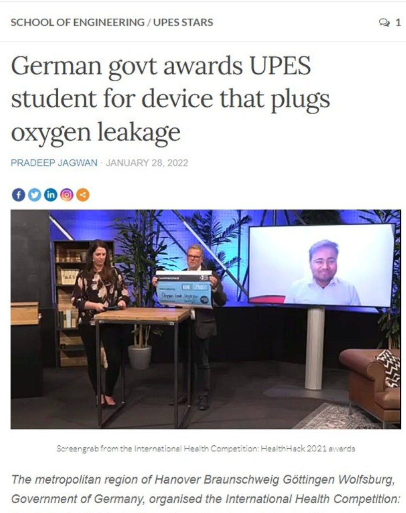<span style='font-size: 14.0PT; '>
</span></p><p class="normal_text" style='direction: ltr; '><span style='font-size: 14.0PT; '><strong>2.Taco Bell Foundation and Ambition Ashoka Accelator awarding for work in Agritech Industry 
</strong></span></p><p class="normal_text" style='direction: ltr; text-align: center; '>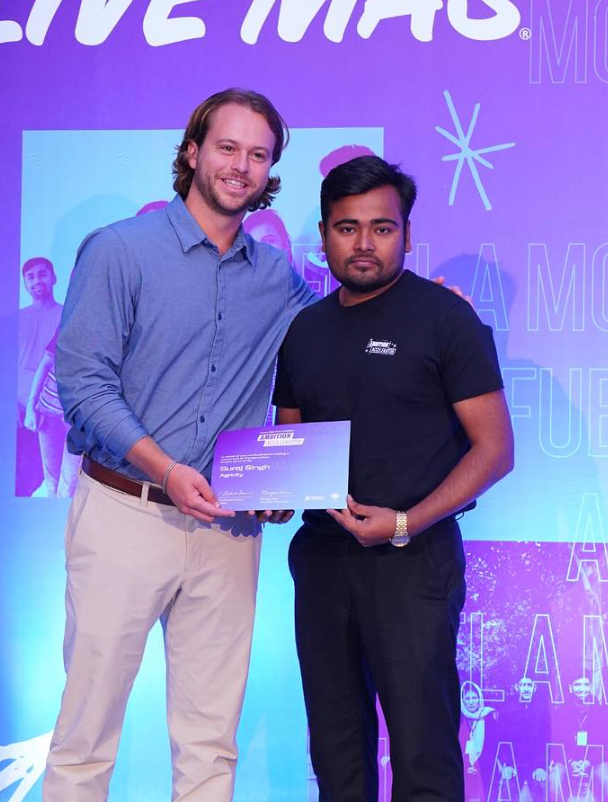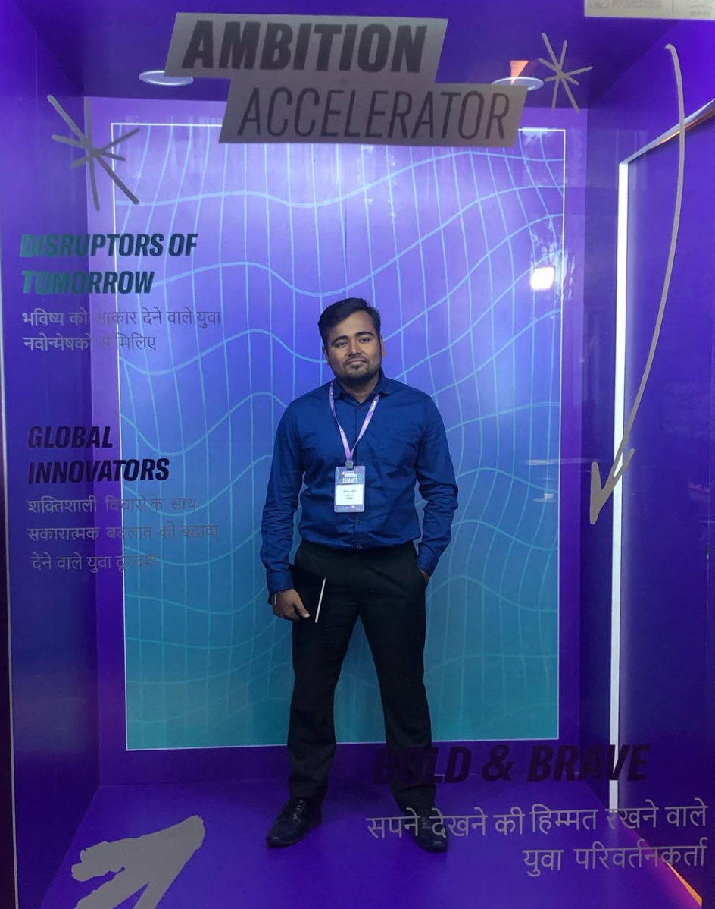<span style='font-size: 14.0PT; '>
</span></p><p class="normal_text" style='direction: ltr; text-align: center; '><span style='font-size: 14.0PT; '>3. BeVisioneers : Mercedes Benz Fellow
</span></p><p class="normal_text" style='direction: ltr; text-align: center; '><span style='font-size: 14.0PT; '>
</span></p><p class="normal_text" style='direction: ltr; text-align: center; '><span style='font-size: 14.0PT; '>4.Winning first prize at Europe’s Largest Hackathon
</span></p><p class="normal_text" style='direction: ltr; text-align: center; '><span style='font-size: 14.0PT; '>
</span></p><p class="normal_text" style='direction: ltr; text-align: center; '><span style='font-size: 14.0PT; '>5. Speaker at Microsoft’s Event
</span></p><p class="normal_text" style='direction: ltr; text-align: center; '>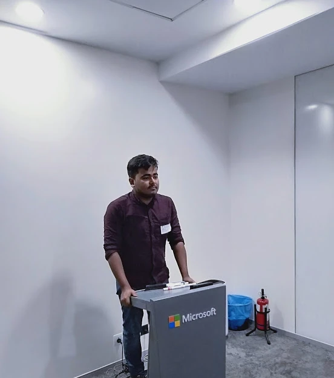<span style='font-size: 14.0PT; '>
</span></p><p class="normal_text" style='direction: ltr; text-align: center; '><span style='font-size: 14.0PT; '>6.Winner at JetBrains Day
</span></p><p class="normal_text" style='direction: ltr; text-align: center; '>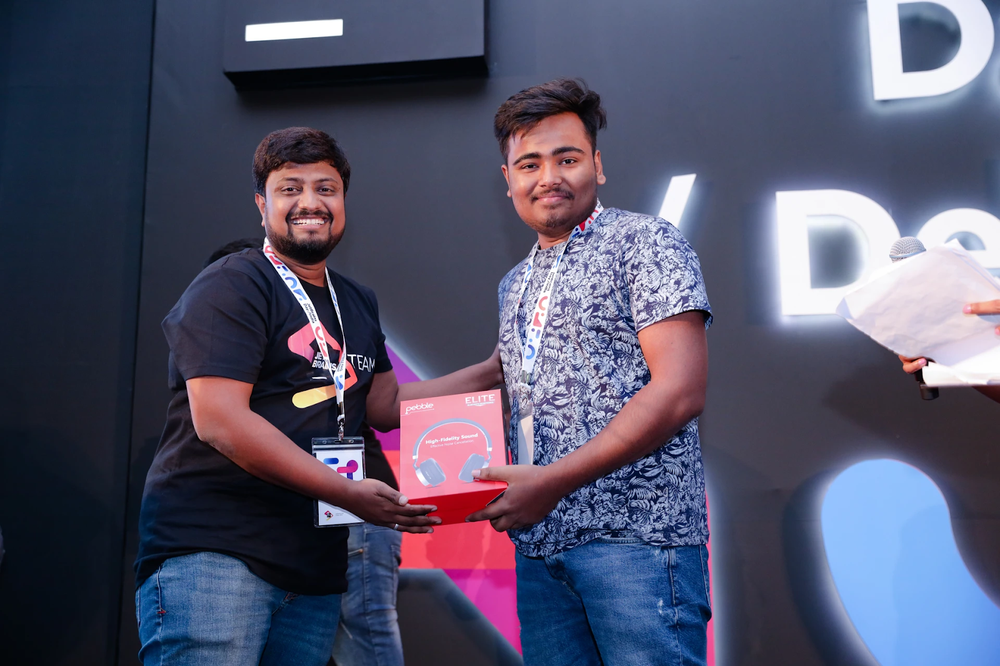<span style='font-size: 14.0PT; '>
</span></p><p class="normal_text" style='direction: ltr; text-align: center; '><span style='font-size: 14.0PT; '>
</span></p><p class="normal_text" style='direction: ltr; '><span style='font-size: 14.0PT; '>
</span></p>
</div><footer>
    Created for free by
    <a href="https://gdocweb.com" target="_blank">gdocweb</a>. <br>
    Convert Google Docs files to full fledged websites <b>for free</b>.
</footer>
<script>
function toggleMenu() {
    var header = document.querySelector('header');
    header.classList.toggle('nav-active');
}

function toggleSubmenu(event, submenuId) {
    var submenu = document.getElementById(submenuId);
    var parentLi = submenu.parentElement;
    parentLi.classList.toggle('submenu-active');
    event.stopPropagation();
}

window.onclick = function(event) {
    var submenus = document.getElementsByClassName("submenu");
    for (var i = 0; i < submenus.length; i++) {
        var parentLi = submenus[i].parentElement;
        if (!parentLi.contains(event.target)) {
            parentLi.classList.remove('submenu-active');
        }
    }
}
</script>
</body>
</html>